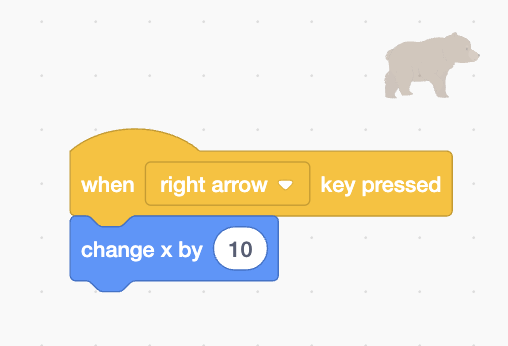
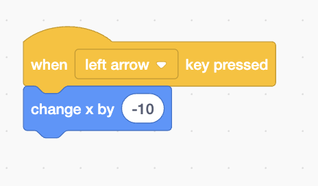
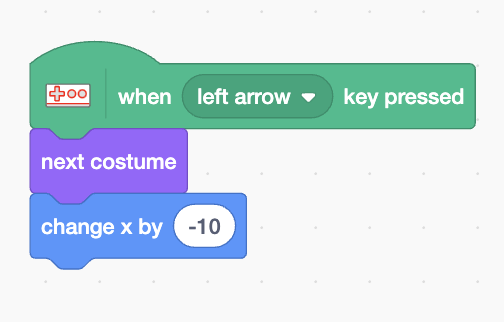
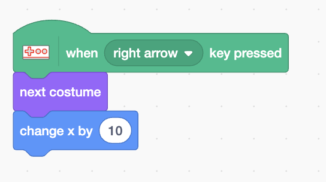
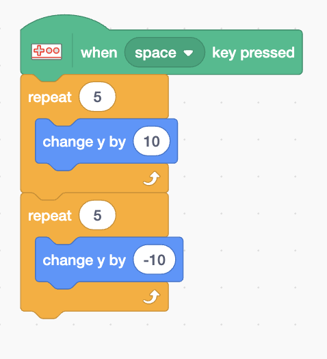

Learning Target
1. Make a character move left, right, and jump in Scratch.
2. Connect the makey makey to the scratch code.
Success Criteria
- Sprite moves left (
change x by -10) - Sprite moves right (
change x by 10) - Sprite jumps (repeat up / repeat down)
Materials
- Scratch
- Makey Makey + Controller

How Scratch Movement Works
- Left/Right: change
x. Right is positive; left is negative. - Up/Down: change
y. Up is positive; down is negative. - Jump: increase
ya few times, then decrease to land.
Types of Basic Movements
- Keyboard Inputs: Use key presses to move the character.
- Computer Controlled: Move the character automatically.
- Mouse Inputs: Move the character with the mouse.
Today we will focus on Keyboard Inputs
Step 0: Open Scratch
- Open Scratch
- Create a new project
- Create a new sprite
- Save the project
Step 1: Make Character Move to the Right
Step 2: Make Character Move to the Left
Step 3: Make Character Jump Up
Step 4: Make Character Jump Down


Now we will connect the makey makey to the scratch code.
Makey Makey Setup
- Connect via USB to your computer
- Connect ←, →, and SPACE to makey makey code labeled LEFT / RIGHT / JUMP.
- Touch pads to control the same Scratch code.
Makey Makey Code
when [left pad v] pressed change x by (-10)
Makey Makey Code for Right
when [right pad v] pressed change x by (10)
Makey Makey Code for Jump
when [space pad v] pressed change y by (5) repeat (10) change y by (-5)
Review
What is the Makey Make code compare with the keyboard code?
- What does the X do? What does the Y do?
- How is the Makey Makey code different from the keyboard code?
- How is the Makey Makey code the same as the keyboard code?
- What is the difference between the left and right code?
- What is the difference between the jump up and jump down code?
Extra Challenges
- Add gravity to the code.
- Add a color change to the code.
- Create 2 characters that can move and jump.
- Add a jump count using variables
Explore Further using other projects
Concepts to Remember for later.
Advanced Reading Alert
3 Types of Character Controls
One of the key skills necessary when building projects is using the right type of controls for the character. There are times when you want the character to be controlled by the keyboard, other times you want the character's movement to be automatic, and other times you want a character to be based on how the mouse moves.
1. Keyboard Inputs
To build controls based on key inputs, we use loops, conditional statements, and sense whether or not the keyboard button we have intended for movement is being pressed.
Moving Forward: Use a 'When Green Flag Clicked' block from Events, then an 'If Then' conditional statement from Control. Inside the diamond, place a 'When Key Pressed' block from Sensing set to 'Up Arrow'. In the action area, add 'Move 10 steps' from Motion.
Moving Backward: Similar to forward, but use 'Down Arrow' and 'Move -10 steps' (negative steps move backward).
Turn Left: Use 'Left Arrow' key pressed, with 'Turn 5 Degrees Counterclockwise' from Motion. Making it 5 degrees instead of 15 creates a more gradual turn.
Turn Right: Use 'Right Arrow' key pressed, with 'Turn 5 Degrees Clockwise' from Motion.
2. Computer Controlled
There are times when we want automatic movement without precise controls. This is useful when one character is controlled by keyboard inputs and another character should move automatically.
Use 'When Green Flag Clicked' from Events, then 'Glide (1) secs to X Y' from Motion. Replace the X coordinate with 'Pick Random (-240) to (240)' from Operators, and the Y coordinate with 'Pick Random (-180) to (180)'. This makes the character move to random positions every second.
To make movement faster, reduce the glide time (0.1-0.9 seconds). To make it slower, increase the time (2-5 seconds).
3. Mouse Inputs
Instead of using keyboard inputs, we can control our character based on the position of the mouse.
Use 'When Green Flag Clicked' from Events, then 'Glide (1) secs to X Y' from Motion. Replace the X coordinate with 'Mouse X' from Sensing, and the Y coordinate with 'Mouse Y' from Sensing.
For mouse controls, we want the character to move as fast as possible to where the mouse is. Reduce the glide time to 0 or 0.1 seconds for instant, responsive movement.